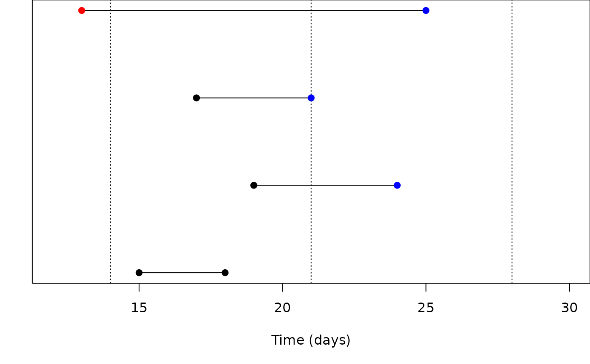

This vignette describes the algorithm used for periodic resetting, which is used in systems that need to calculate incidence. For example, suppose that you have a system you are fitting to case data (e.g., the number of new cases per day) and your system is a discrete time system that updates in intervals of 1/10 a day. To do this you would typically accumulate new cases over each fractional day until the day is complete, then you would reset this variable to zero at the start of the next day. Here we outline how we perform this calculation for both types of systems in discrete time (which is quite straightforward) and in continuous time (which is more complex), along with the assumptions we make about the sorts of values that will be accumulated in this way, and details about exactly when resetting happens, especially in the context of comparison to data.
This vignette is intended as documentation for the package authors and for very interested parties. You do not need to read or understand this vignette to use the package.
Discrete time systems
We start with discrete time systems because they’re much easier to
think about, and consider the case of the SIR system in the package,
which we’ll write out by hand here (we could relax this if we tweaked
simulate to allow returning fractional days, I think).
The relevant section of the update() method looks like
this:
const auto S = state[0];
const auto I = state[1];
const auto p_SI = 1 - monty::math::exp(-shared.beta * I / shared.N * dt);
const auto n_SI = monty::random::binomial<real_type>(rng_state, S, p_SI);
state_next[4] += n_SI;Here, we unpack S and I from the state
vector, compute the per-individual probability of moving from
S to I (p_SI), then draw a total
number of individuals to move from S to I
(n_SI) using the binomial distribution. Finally, we
accumulate that into the incidence state (state_next[4]).
Here, we don’t do anything to cause this to reset each day. Instead, we
define a zero_every method which arranges this for us:
static auto zero_every(const shared_state& shared) {
return dust2::zero_every_type<real_type>{{1, {4}}};
}The initializer-list syntax is a bit gory but {{1, {4}}}
reads as “every 1 time unit zero the variables at index 4”, which is
what we want to do.
When running the system we apply the update function
over and over, so the daily cases increases. At the end of a day (so in
the step that increases time to an integer value) the incidence value
will be at its peak, and that is what is returned by
dust_system_state() after the system has been run.
The zeroing happens just before the first call to
update() at the start of the run away from an eligible
time. So even though the system operates in discrete time you can think
of this as happening at t + eps.
Doing this trick for discrete time models is easy because we are guaranteed to visit each time step in turn, and because we guarantee that each integer-valued time will be visited (eventually), and we require that the periods used for resetting are themselves integer-like (you cannot compute 0.25-daily incidence for example).
Continuous time systems
It turns out we can do the same trick in continuous time systems, too, though it’s much less obvious how it works. With a continuous time system, the difficulty is that we can’t be guaranteed to land on exactly the times corresponding to the reset periods, though it turns out that most of the time we probably will because these will typically align with the places that we have data.
Consider again resetting some variables immediately at the start of a
step. We end up performing this check at every step. We look to see if
we have passed over a reset time in the previous step. To do
this we consider events along a real line, and with the time at the end
of the previous step and our current step we compute, for each interval
in question, how many complete divisions of the interval are possible.
If both the previous step and current step have n divisions
(that is,
)
then they are within the same period and no reset is required, but if
the current step has more divisions than the previous then we have
passed one (or more) resettings.

Consider the figure which illustrates the situation. Time runs along the x axis in days, and dotted vertical lines indicate beginnings of weeks (every 7 days, as is conventional). The first pair of points in the figure move from day 15 to 18, both of which are in week 2 (); at the end of this step we don’t need to consider resetting any weekly variables.
The middle pair of points run from day 19 to 24, crossing from the middle of week 2 to week 3. At the end of the previous step, any weekly-reset variables hold values that need resetting, and we will need to do this before continuing the integration. The third set of points also need resetting; they have landed exactly at the boundary of week 2 and 3, so the first thing that we need to do on starting is reset the values to accumulate for week 3. This situation is very common as we’ll often have resetting variables aligned with data, and the solver will stop exactly at the times with data.
In the fourth case, we jump over two reset values, but this is OK too, even though we never hold a correct value through week 2, we also never use that value in week 2. We still need to reset before continuing as we’ve crossed at least one boundary.
Having decided to reset, we then need to make the changes to the values. In the case where we have landed exactly at a boundary (which is more common than you’d think; see above) this is very easy; we can just zero the value of our variables in question!
In the case where we are part-way through an interval this is more complex though. This is true for the second and fourth cases above. We need to compute the value of the target function at the time of reset and subtract this off of the current value of the variables to be reset. To do this we exploit the Dormand-Prince solver’s “dense output”, which allows us to interpolate any variable over the interval of the previous interval. In the fourth case where we have jumped over two intervals, this calculation only happens for the final interval.
There’s one remaining wrinkle, which is what happens at the very end of the integration. Consider the points above to be the final steps taken by the solver at the end of the integration (so at the beginning of the step our resetting variables were corrected as above). In this case, for the fourth case we have a problem in that the step has passed into a new interval so we need to apply a reset. Here our step has taken us from 13 through to 25 jumping over resets at 14 and 21. We look up the value of the variables at 21 and subtract them from the final values held, so that we now have only values accumulated during week 3.
Properties of resettable variables
The implementation here makes some assumptions about your variables
which are hard to prove by dust2 itself, so you are
responsible for satisfying them. We’ll try and make sure that
odin2 can satisfy these for you so that you never need to
worry about it though (even more than you don’t need to worry about
anything in this vignette).
They accumulate only; for ode systems they have a rate of ingress
that does not depend on themselves and they are never read by any other
part of the system. This is important because at many parts of the
integration they will hold the incorrect value. For discrete time
systems they should be an incremental addition (e.g., with
+=).